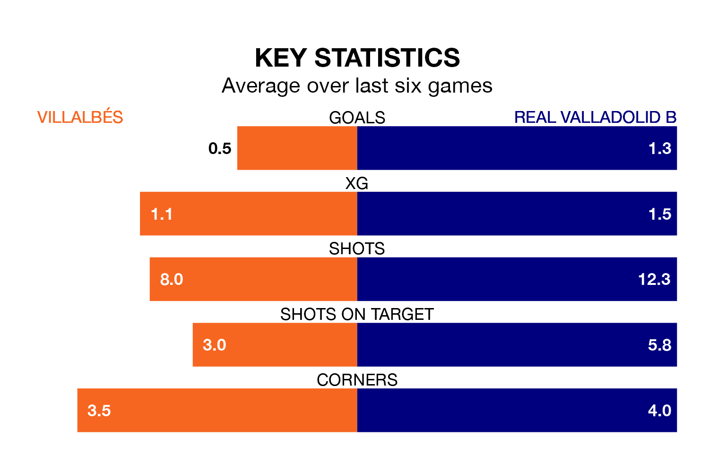

Villalbés host Real Valladolid B on Saturday at the Estadio Municipal A Magdalena in the Segunda División RFEF Group 1.
In their last league match, on Sunday, Villalbés lost to Gimnástica Torrelavega 2-1 away.
Valladolid B also lost, 4-3 at home against Deportivo La Coruña B on March 23, with Eugene Adjei Frimpong and Jesús Martínez Girón on the scoresheet.
With 19 goals in 28 games so far this season, Villalbés are the league's lowest scorers with 0.7 goals per game. But they are conceding fewer than average too, letting in 27 goals at a rate of 1.0 per game.
Valladolid B, meanwhile, are average scorers, with 1.2 goals per game. They have conceded 1.7 goals per game.
The home team are 14th in the table after 28 games, of which they have won seven and drawn 10, earning 31 points.
The visitors are two places ahead of Villalbés in 12th, with nine wins and six draws putting them on 33 points.
Villalbés are in disappointing form in the Segunda División RFEF Group 1, with one win and two draws from their last six games.
And also with a win and two draws over that period, Valladolid B's form is identical – they have both taken five points from 18.
Updated: 12:16 (UTC), 25/03/24